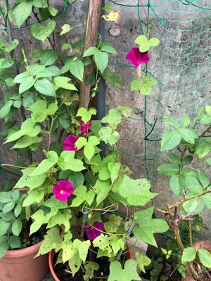

うるがいの話 ある日
最新: スラー
うるがいとは 前提知識です
カニの画像をクリックすると『うるがいの話』サイトを表示します
うるがい(ｳﾙｶﾞｲ urugai)とは、『もずくがに』の名前でとても大きくなります。
たながー（ﾀﾅｶﾞｰtanagaa）とは手長えびのことで、何種類かあり大きいのは車 エビぐらいになります。
ぶながー(bunagaa)とは、赤い髪の毛、赤い身体、そして身長は１ｍ２０ｃｍ ぐらい、川の蟹を食べているの目撃された。場所は沖縄県国頭郡大宜味村のと ある村僕の隣近所に住んでいる爺さんから、聞いた話です。
2021年08月11日 (水）
スラー
16:13

今日も続いている無料タブ譜作成ソフトの機能を調べている。楽譜にあるスラ
ー【slur】（違う音をつないでいる場合のことらしい）が無い。・・結論から、
このソフトはギター専用であるためそれに代わるのはスライドまたはハンマー
オン／プルオフの形でとウィキペディアにある。はー、知らない、スライドと
ハンマリングを使い分けて歌うように弾いてみようをユーチューブで視聴する
。ほほ、スライドだな（スライドとは、弦を押さえたままフレットを移動する
こと）。このように、今日も一日が過ぎていく。